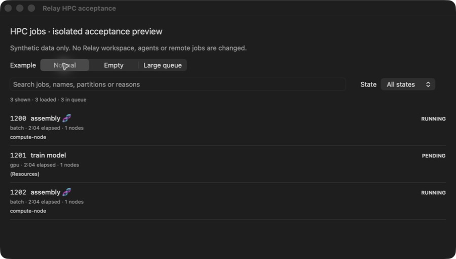
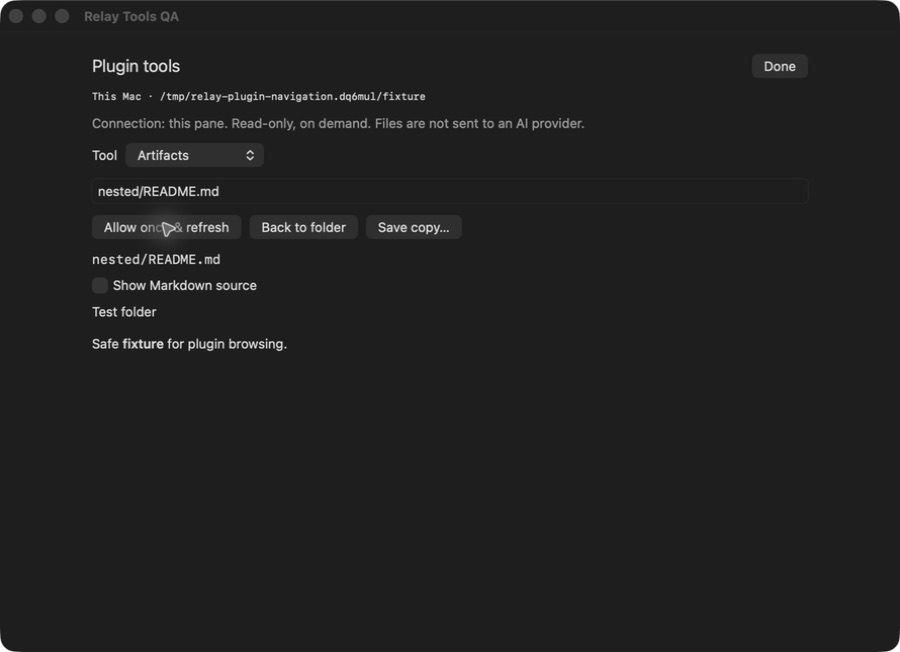
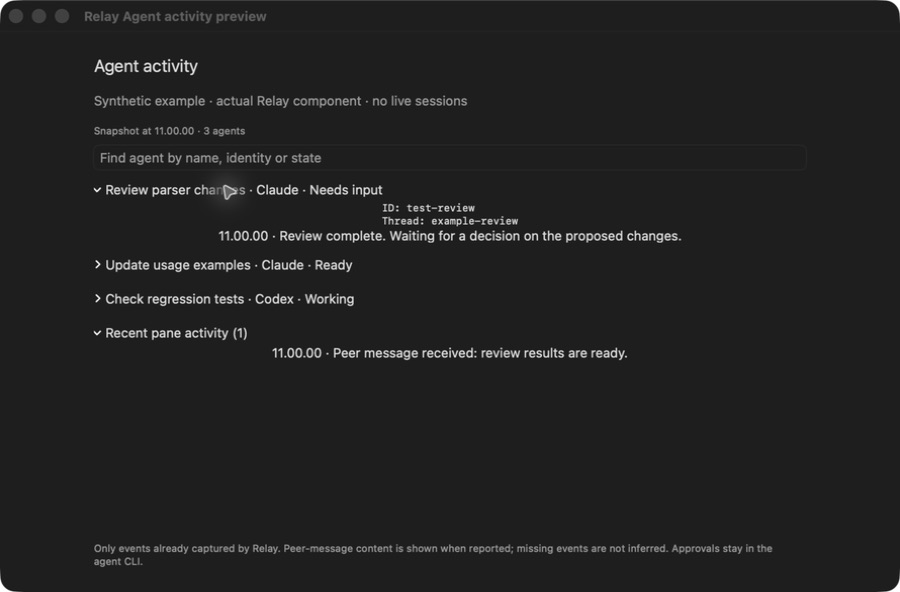
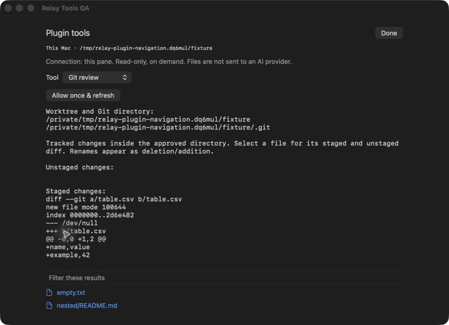
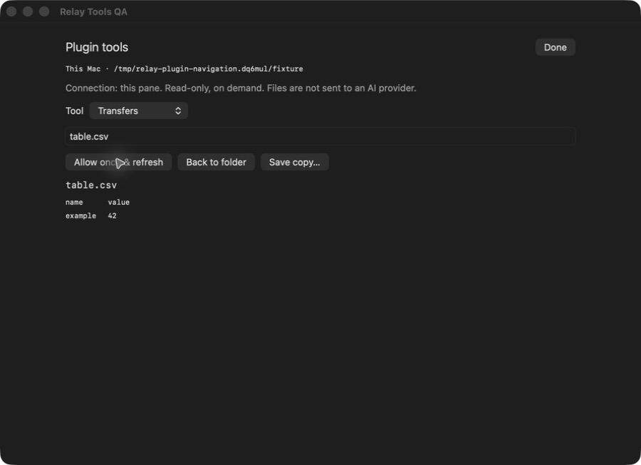
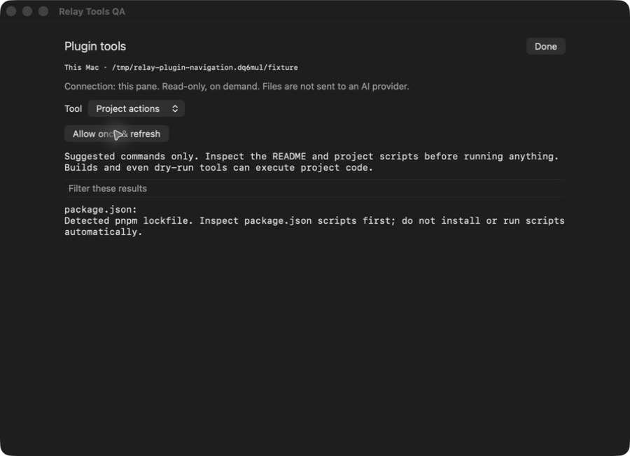

Sessions & panes
Local shells and SSH connections, grouped into tabs. Split panes or use floating panels. Remote processes run under relayd on the host.
Local terminals, SSH sessions,
and the files you’re working on.
In development. Builds and known issues are listed on GitHub.
Local shells and SSH connections, grouped into tabs. Split panes or use floating panels. Remote processes run under relayd on the host.
Edit remote files, inspect diffs and preview images. Files stay on the remote host unless you download a copy.
Run the CLIs in terminal panes. Open captured agent and subagent updates in the activity panel. Coverage depends on the integration.
Tools for the current host and project. Open one to see what it supports.

The published v0.1.0 lists owned jobs. Search and filter up to 500 loaded rows, with an explicit queue count.
Details, log tails, submission and cancellation remain development work outside that release.
HPC features and installation
Browse folders and preview images, Markdown, text or CSV/TSV tables. Save a verified copy with the native dialog.
Files are limited to 8 MiB; previews are bounded. HTML is not executed and external images are not loaded.
Artifact features and limits
Search a snapshot of up to 100 agents. Expand identities, timestamped updates and recent pane activity.
This displays already-captured events. It does not send peer messages, answer approvals or guarantee complete provider history.
Agent activity features and limits
List and filter changed tracked files, then inspect staged and unstaged changes for the selected file.
Read-only, with bounded output. No commits, staging, untracked-file contents or agent handoff.
Git review features and limits
Browse files, verify received bytes with SHA-256 and save atomically through the native macOS dialog.
Regular files up to 8 MiB. Large-file streaming, resume, directory transfers and Finder drag-out remain unfinished.
Transfer features and limits
Detect project types and JavaScript package managers from manifests and lockfiles.
Suggestions only. The plugin does not install dependencies or run repository scripts.
Project action features and limitsScreenshots use test data from the development build.
Only HPC jobs v0.1.0 has an installable release. The other five packages are still in development.
Remote features need relayd on the SSH host. Check the app and helper versions together; existing workers may still use an older binary.
Keep another SSH client available when testing with important sessions.
genomewalker/relay-plugin-hpc-jobsRelease tag v0.1.0Builds and known limitations are listed on GitHub. Relay is not yet a production release.